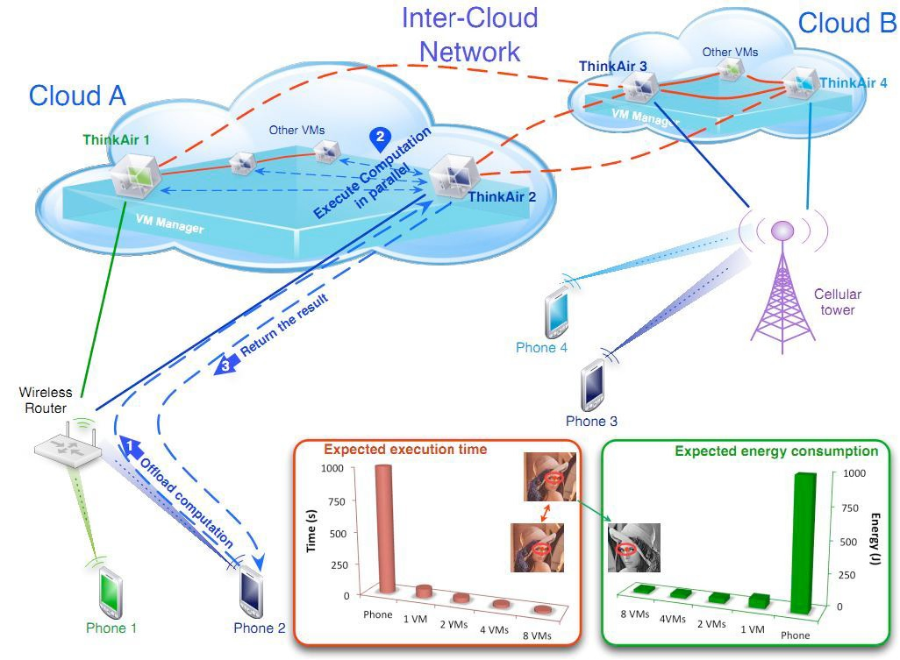
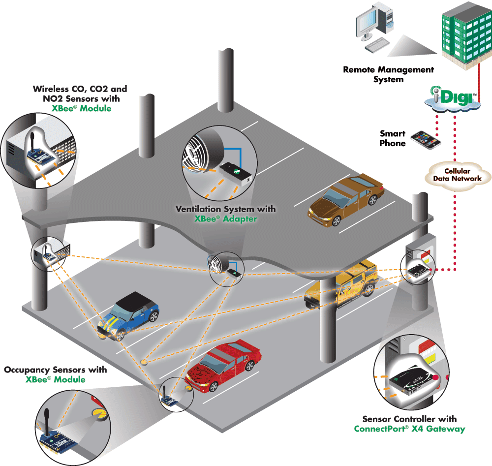
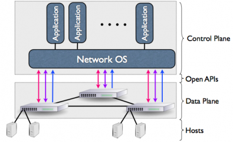

SyMLab
Some current projects

Cloud Rider
Augmented Reality (AR) is the next big thing for mobile devices (e.g. Smartphones and AR glasses), but it requires a lot of resources. Sound/image processing is expensive and requires large knowledge bases - they cannot be done locally on a device. The objective of the CloudRider project is to develop the mobile cloud computing technology and the in-cloud big data processing algorithms to enable an AR ecosystem. CloudRider proposes a bottom up approach and aims to cover a wide landscape of system level research, identify the important research challenges in each area, and secure the AR business by producing key patents in each important aspect.
Vehicular Data Center
With sophisticated array of sensing and computation capacities, as well as growing Internet presence and unlimited power supply, the present day vehicle models become perfect candidates to act as the nodes of “data center on wheel”. Compare to moving counterparts, parked vehicles show great advantages in storage, communication and manageability. The vehicle groups on our roadways, streets and parking lots are recognized as an abundant and underutilized computational resource that can be leveraged for the purpose of providing networking, computing or social services. It is also expected that, once adopted and championed by municipalities and third-party infrastructure providers, parked clouds will redefine the way in which pervasive computing and its myriad applications is thought of.

